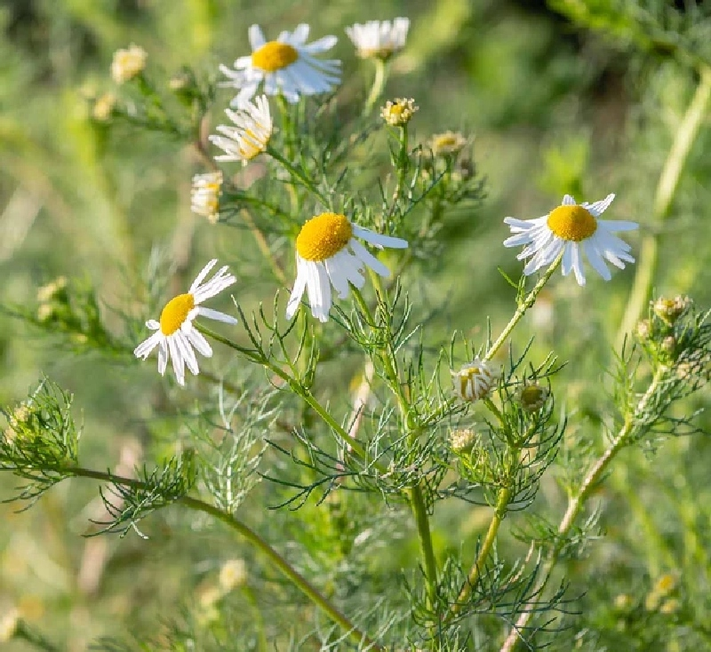
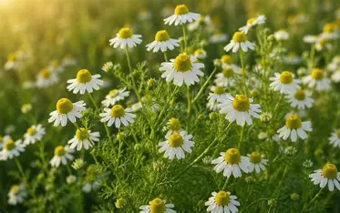

Ромашка лікарська — однорічна трав'яниста рослина родини айстрових. Вона має характерні білі пелюстки та жовту серединку. Рослина широко поширена в Україні та інших країнах Європи. Ромашку можна зустріти на полях, луках, узбіччях доріг та інших відкритих місцевостях. Вона є однією з найвідоміших лікарських рослин і здавна використовується людиною.
Ромашка має тонке розгалужене стебло та невеликі листки. Найбільш характерною частиною рослини є її суцвіття, яке складається з білих пелюсток і жовтої центральної частини. Період цвітіння ромашки зазвичай припадає на теплу пору року. Для різних потреб переважно збирають квіткові кошики рослини.

Збирають ромашку переважно під час активного цвітіння в суху погоду. Після збирання квітки висушують у добре провітрюваному приміщенні та зберігають у сухому місці. Ромашка використовується у фармацевтичній промисловості, косметичних засобах та різноманітних трав'яних зборах.
Початок